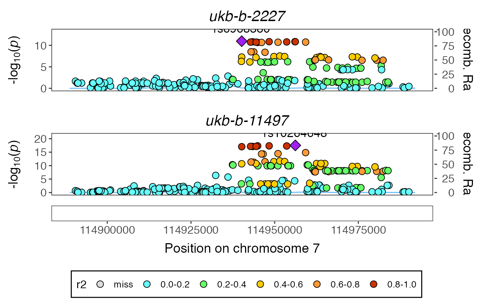

Create new rms2 class for the outcome GWAS of interest
x <- rms2$new("ukb-b-2227") #> API: public: http://gwas-api.mrcieu.ac.uk/ #> Classes 'GwasInfo' and 'data.frame': 1 obs. of 18 variables: #> $ id : chr "ukb-b-2227" #> $ trait : chr "Number of children fathered" #> $ sex : chr "Males and Females" #> $ mr : int 1 #> $ subcategory: logi NA #> $ priority : int 1 #> $ note : chr "2405: Output from GWAS pipeline using Phesant derived variables from UKBiobank" #> $ ontology : logi NA #> $ year : int 2018 #> $ author : chr "Ben Elsworth" #> $ unit : chr "SD" #> $ group_name : chr "public" #> $ sample_size: int 209872 #> $ population : chr "European" #> $ build : chr "HG19/GRCh37" #> $ nsnp : int 9851867 #> $ consortium : chr "MRC-IEU" #> $ category : chr "Categorical Ordered" #>
Get the GWAS hits for that dataset
x$extract_gwashits() #> Found 3 GWAS hits for ukb-b-2227 x$gwashits #> # A tibble: 3 x 12 #> beta chr se p n position id rsid ea nea eaf #> <dbl> <chr> <dbl> <dbl> <dbl> <int> <chr> <chr> <chr> <chr> <dbl> #> 1 -0.0193 3 0.00260 1.30e-13 209872 85510543 ukb-b… rs62… T A 0.617 #> 2 0.0187 7 0.00275 1.10e-11 209872 114940159 ukb-b… rs69… A G 0.694 #> 3 -0.0167 8 0.00302 2.80e- 8 209872 65133678 ukb-b… rs23… C T 0.772 #> # … with 1 more variable: trait <chr>
Scan OpenGWAS for associations with the second GWAS hit
x$scan_rsid(x$gwashits$rsid[2]) #> Found 6 associations for rs6968380 x$rsid_scan #> $rs6968380 #> # A tibble: 6 x 12 #> position p se beta n chr id rsid ea nea eaf #> <int> <dbl> <dbl> <dbl> <dbl> <chr> <chr> <chr> <chr> <chr> <dbl> #> 1 114940159 9.20e-18 8.18e-4 -0.00702 462933 7 ukb-… rs69… A G 0.693 #> 2 114940159 6.50e-10 9.96e-4 0.00615 459600 7 ukb-… rs69… A G 0.693 #> 3 114940159 1.30e- 9 1.24e-3 -0.00751 462434 7 ukb-… rs69… A G 0.693 #> 4 114940159 3.90e- 9 1.07e-3 -0.00629 451893 7 ukb-… rs69… A G 0.693 #> 5 114940159 4.82e- 9 3.19e-3 0.0187 154888 7 ukb-… rs69… A G 0.695 #> 6 114940159 2.20e- 8 1.06e-3 -0.00594 459560 7 ukb-… rs69… A G 0.693 #> # … with 1 more variable: trait <chr>
Perform colocalisation for each of the candidate associations
x$coloc_scan(x$gwashits$rsid[2]) #> coloc analysis of ukb-b-11497 #> Warning in sdY.est(d$varbeta, d$MAF, d$N): estimating sdY from maf and varbeta, #> please directly supply sdY if known #> Warning in sdY.est(d$varbeta, d$MAF, d$N): estimating sdY from maf and varbeta, #> please directly supply sdY if known #> PP.H0.abf PP.H1.abf PP.H2.abf PP.H3.abf PP.H4.abf #> 2.37e-19 4.59e-14 5.81e-08 1.03e-02 9.90e-01 #> [1] "PP abf for shared variant: 99%" #> coloc analysis of ukb-b-698 #> Warning in sdY.est(d$varbeta, d$MAF, d$N): estimating sdY from maf and varbeta, #> please directly supply sdY if known #> Warning in sdY.est(d$varbeta, d$MAF, d$N): estimating sdY from maf and varbeta, #> please directly supply sdY if known #> PP.H0.abf PP.H1.abf PP.H2.abf PP.H3.abf PP.H4.abf #> 2.03e-11 3.93e-06 6.61e-08 1.18e-02 9.88e-01 #> [1] "PP abf for shared variant: 98.8%" #> coloc analysis of ukb-b-223 #> Warning in sdY.est(d$varbeta, d$MAF, d$N): estimating sdY from maf and varbeta, #> please directly supply sdY if known #> Warning in sdY.est(d$varbeta, d$MAF, d$N): estimating sdY from maf and varbeta, #> please directly supply sdY if known #> PP.H0.abf PP.H1.abf PP.H2.abf PP.H3.abf PP.H4.abf #> 2.84e-14 5.51e-09 5.01e-06 9.71e-01 2.92e-02 #> [1] "PP abf for shared variant: 2.92%" #> coloc analysis of ukb-b-13764 #> Warning in sdY.est(d$varbeta, d$MAF, d$N): estimating sdY from maf and varbeta, #> please directly supply sdY if known #> Warning in sdY.est(d$varbeta, d$MAF, d$N): estimating sdY from maf and varbeta, #> please directly supply sdY if known #> PP.H0.abf PP.H1.abf PP.H2.abf PP.H3.abf PP.H4.abf #> 3.52e-11 6.81e-06 7.09e-08 1.27e-02 9.87e-01 #> [1] "PP abf for shared variant: 98.7%" #> coloc analysis of ukb-a-304 #> Warning in sdY.est(d$varbeta, d$MAF, d$N): estimating sdY from maf and varbeta, #> please directly supply sdY if known #> Warning in sdY.est(d$varbeta, d$MAF, d$N): estimating sdY from maf and varbeta, #> please directly supply sdY if known #> PP.H0.abf PP.H1.abf PP.H2.abf PP.H3.abf PP.H4.abf #> 1.27e-10 2.46e-05 5.68e-08 1.00e-02 9.90e-01 #> [1] "PP abf for shared variant: 99%" #> coloc analysis of ukb-b-6991 #> Warning in sdY.est(d$varbeta, d$MAF, d$N): estimating sdY from maf and varbeta, #> please directly supply sdY if known #> Warning in sdY.est(d$varbeta, d$MAF, d$N): estimating sdY from maf and varbeta, #> please directly supply sdY if known #> PP.H0.abf PP.H1.abf PP.H2.abf PP.H3.abf PP.H4.abf #> 9.63e-10 1.87e-04 9.19e-08 1.68e-02 9.83e-01 #> [1] "PP abf for shared variant: 98.3%" x$coloc_result #> $rs6968380 #> # A tibble: 6 x 7 #> id nsnps PP.H0.abf PP.H1.abf PP.H2.abf PP.H3.abf PP.H4.abf #> <chr> <dbl> <dbl> <dbl> <dbl> <dbl> <dbl> #> 1 ukb-b-11497 297 2.37e-19 4.59e-14 0.0000000581 0.0103 0.990 #> 2 ukb-b-698 325 2.03e-11 3.93e- 6 0.0000000661 0.0118 0.988 #> 3 ukb-b-223 324 2.84e-14 5.51e- 9 0.00000501 0.971 0.0292 #> 4 ukb-b-13764 315 3.52e-11 6.81e- 6 0.0000000709 0.0127 0.987 #> 5 ukb-a-304 325 1.27e-10 2.46e- 5 0.0000000568 0.0100 0.990 #> 6 ukb-b-6991 318 9.63e-10 1.87e- 4 0.0000000919 0.0168 0.983
Example of plotting a region (extracts LD matrix)
x$plot_coloc(x$gwashits$rsid[2], x$rsid_scan[[x$gwashits$rsid[2]]]$id[1]) #> Extracting LD matrix for 297 variants #> Please look at vignettes for options on running this locally if you need to run many instances of this command. #> Warning in ieugwasr::ld_matrix(markers[["marker"]], with_alleles = FALSE, : The following variants are not present in the LD reference panel #> rs117161781 #> rs117273777 #> rs117303422 #> rs118169575 #> rs139454624 #> rs139462051 #> rs139500510 #> rs140651620 #> rs141744989 #> rs141995076 #> rs142087962 #> rs142329760 #> rs142372229 #> rs142664107 #> rs143271578 #> rs144588831 #> rs146170513 #> rs151172702 #> rs180940258 #> rs180946512 #> rs181430058 #> rs181494117 #> rs182895259 #> rs183744920 #> rs184050099 #> rs184314722 #> rs185309780 #> rs187219455 #> rs193077931 #> rs2188543 #> rs2396813 #> rs4730672 #> rs558482618 #> rs560974722 #> rs575755508 #> rs71563623 #> rs73200222 #> rs75351137 #> rs75354202 #> rs77870086 #> rs7787817 #> Found 256 variants in LD reference panel #> Loading required package: gassocplot

#> TableGrob (2 x 1) "arrange": 2 grobs
#> z cells name grob
#> 1 1 (1-1,1-1) arrange gtable[layout]
#> 2 2 (2-2,1-1) arrange gtable[guide-box]Perform MR for all the candidate traits (though could also exclude the traits that don’t colocalise)
x$mr(x$gwashits$rsid[2], exclude_rsid_region=TRUE) #> Extracting data for 79 SNP(s) from 1 GWAS(s) #> Harmonising Operation code: tonsillectomy +/- adenoids || id:ukb-b-11497 (ukb-b-11497) and Number of children fathered || id:ukb-b-2227 (ukb-b-2227) #> Removing the following SNPs for being palindromic with intermediate allele frequencies: #> rs1056688, rs2215552, rs2661798 #> [1] 79 #> Estimating correlation for quantitative trait. #> This method is an approximation, and may be numerically unstable. #> Ideally you should estimate r directly from independent replication samples. #> Use get_r_from_lor for binary traits. #> Estimating correlation for quantitative trait. #> This method is an approximation, and may be numerically unstable. #> Ideally you should estimate r directly from independent replication samples. #> Use get_r_from_lor for binary traits. #> [1] 78 #> [1] 78 #> Analysing 'ukb-b-11497' on 'ukb-b-2227' #> Extracting data for 5 SNP(s) from 1 GWAS(s) #> Harmonising How are people in household related to participant: Husband, wife or partner || id:ukb-b-698 (ukb-b-698) and Number of children fathered || id:ukb-b-2227 (ukb-b-2227) #> [1] 5 #> Estimating correlation for quantitative trait. #> This method is an approximation, and may be numerically unstable. #> Ideally you should estimate r directly from independent replication samples. #> Use get_r_from_lor for binary traits. #> Estimating correlation for quantitative trait. #> This method is an approximation, and may be numerically unstable. #> Ideally you should estimate r directly from independent replication samples. #> Use get_r_from_lor for binary traits. #> [1] 2 #> [1] 2 #> Analysing 'ukb-b-698' on 'ukb-b-2227' #> Extracting data for 35 SNP(s) from 1 GWAS(s) #> Harmonising Current tobacco smoking || id:ukb-b-223 (ukb-b-223) and Number of children fathered || id:ukb-b-2227 (ukb-b-2227) #> Removing the following SNPs for being palindromic with intermediate allele frequencies: #> rs58040999 #> [1] 35 #> Estimating correlation for quantitative trait. #> This method is an approximation, and may be numerically unstable. #> Ideally you should estimate r directly from independent replication samples. #> Use get_r_from_lor for binary traits. #> Estimating correlation for quantitative trait. #> This method is an approximation, and may be numerically unstable. #> Ideally you should estimate r directly from independent replication samples. #> Use get_r_from_lor for binary traits. #> [1] 35 #> [1] 34 #> Analysing 'ukb-b-223' on 'ukb-b-2227' #> Extracting data for 29 SNP(s) from 1 GWAS(s) #> Harmonising Long-standing illness, disability or infirmity || id:ukb-b-13764 (ukb-b-13764) and Number of children fathered || id:ukb-b-2227 (ukb-b-2227) #> [1] 30 #> Estimating correlation for quantitative trait. #> This method is an approximation, and may be numerically unstable. #> Ideally you should estimate r directly from independent replication samples. #> Use get_r_from_lor for binary traits. #> Estimating correlation for quantitative trait. #> This method is an approximation, and may be numerically unstable. #> Ideally you should estimate r directly from independent replication samples. #> Use get_r_from_lor for binary traits. #> [1] 28 #> [1] 27 #> Analysing 'ukb-b-13764' on 'ukb-b-2227' #> Extracting data for 2 SNP(s) from 1 GWAS(s) #> Harmonising Number of children fathered || id:ukb-a-304 (ukb-a-304) and Number of children fathered || id:ukb-b-2227 (ukb-b-2227) #> [1] 2 #> Estimating correlation for quantitative trait. #> This method is an approximation, and may be numerically unstable. #> Ideally you should estimate r directly from independent replication samples. #> Use get_r_from_lor for binary traits. #> Estimating correlation for quantitative trait. #> This method is an approximation, and may be numerically unstable. #> Ideally you should estimate r directly from independent replication samples. #> Use get_r_from_lor for binary traits. #> [1] 2 #> [1] 1 #> Analysing 'ukb-a-304' on 'ukb-b-2227' #> Extracting data for 44 SNP(s) from 1 GWAS(s) #> Harmonising Seen doctor (GP) for nerves, anxiety, tension or depression || id:ukb-b-6991 (ukb-b-6991) and Number of children fathered || id:ukb-b-2227 (ukb-b-2227) #> Removing the following SNPs for incompatible alleles: #> rs12159707, rs12159707, rs34555420, rs34555420 #> Removing the following SNPs for being palindromic with intermediate allele frequencies: #> rs10143492, rs2876520, rs393488 #> [1] 50 #> Estimating correlation for quantitative trait. #> This method is an approximation, and may be numerically unstable. #> Ideally you should estimate r directly from independent replication samples. #> Use get_r_from_lor for binary traits. #> Estimating correlation for quantitative trait. #> This method is an approximation, and may be numerically unstable. #> Ideally you should estimate r directly from independent replication samples. #> Use get_r_from_lor for binary traits. #> [1] 49 #> [1] 48 #> Analysing 'ukb-b-6991' on 'ukb-b-2227' x$mr_scan[[x$gwashits$rsid[2]]] %>% dplyr::select(exposure, b, se, pval) #> exposure #> 1 Operation code: tonsillectomy +/- adenoids || id:ukb-b-11497 #> 2 How are people in household related to participant: Husband, wife or partner || id:ukb-b-698 #> 3 Current tobacco smoking || id:ukb-b-223 #> 4 Long-standing illness, disability or infirmity || id:ukb-b-13764 #> 5 Number of children fathered || id:ukb-a-304 #> 6 Seen doctor (GP) for nerves, anxiety, tension or depression || id:ukb-b-6991 #> b se pval #> 1 -0.009752799 0.05883241 8.683360e-01 #> 2 1.600228195 0.34060979 2.625577e-06 #> 3 0.119799051 0.05984600 4.530744e-02 #> 4 0.113984410 0.09027558 2.067232e-01 #> 5 0.967971548 0.13132069 1.692875e-13 #> 6 0.058641007 0.08016851 4.644910e-01
Perform multivariable MR of candidate traits. Excluding the alternative GWAS of number of children fathered as this is synonymous with the outcome
x$mvmr(x$gwashits$rsid[2], traitlist=x$rsid_scan[[x$gwashits$rsid[2]]]$id[-5]) #> Please look at vignettes for options on running this locally if you need to run many instances of this command. #> Clumping 1, 192 variants, using EUR population reference #> Removing 51 of 192 variants due to LD with other variants or absence from LD reference panel #> Extracting data for 141 SNP(s) from 5 GWAS(s) #> Harmonising Operation code: tonsillectomy +/- adenoids || id:ukb-b-11497 (ukb-b-11497) and Long-standing illness, disability or infirmity || id:ukb-b-13764 (ukb-b-13764) #> Removing the following SNPs for being palindromic with intermediate allele frequencies: #> rs10143492, rs1056688, rs2215552, rs2661798, rs58040999 #> Harmonising Operation code: tonsillectomy +/- adenoids || id:ukb-b-11497 (ukb-b-11497) and Current tobacco smoking || id:ukb-b-223 (ukb-b-223) #> Removing the following SNPs for being palindromic with intermediate allele frequencies: #> rs10143492, rs1056688, rs2215552, rs2661798, rs58040999 #> Harmonising Operation code: tonsillectomy +/- adenoids || id:ukb-b-11497 (ukb-b-11497) and How are people in household related to participant: Husband, wife or partner || id:ukb-b-698 (ukb-b-698) #> Removing the following SNPs for being palindromic with intermediate allele frequencies: #> rs10143492, rs1056688, rs2215552, rs2661798, rs58040999 #> Harmonising Operation code: tonsillectomy +/- adenoids || id:ukb-b-11497 (ukb-b-11497) and Seen doctor (GP) for nerves, anxiety, tension or depression || id:ukb-b-6991 (ukb-b-6991) #> Removing the following SNPs for being palindromic with intermediate allele frequencies: #> rs10143492, rs1056688, rs2215552, rs2661798, rs58040999 #> Extracting data for 141 SNP(s) from 1 GWAS(s) #> Harmonising Operation code: tonsillectomy +/- adenoids || id:ukb-b-11497 (ukb-b-11497) and Number of children fathered || id:ukb-b-2227 (ukb-b-2227) #> Removing the following SNPs for being palindromic with intermediate allele frequencies: #> rs10143492, rs1056688, rs2215552, rs2661798, rs58040999 x$mv_dat[[x$gwashits$rsid[2]]][["result"]][[1]] %>% dplyr::select(exposure, b, se, pval) #> exposure #> 1 Operation code: tonsillectomy +/- adenoids || id:ukb-b-11497 #> 2 Long-standing illness, disability or infirmity || id:ukb-b-13764 #> 3 Current tobacco smoking || id:ukb-b-223 #> 4 How are people in household related to participant: Husband, wife or partner || id:ukb-b-698 #> 5 Seen doctor (GP) for nerves, anxiety, tension or depression || id:ukb-b-6991 #> b se pval #> 1 -0.003478738 0.06497898 9.573046e-01 #> 2 0.093665403 0.09138850 3.054035e-01 #> 3 0.222608807 0.08616459 9.779497e-03 #> 4 1.457358841 0.18169451 1.049481e-15 #> 5 0.123356060 0.10108759 2.223554e-01
Perform feature selection and re-estimate associations after that. It updates the result from the standard MVMR analysis
x$mvmr_lasso(x$gwashits$rsid[2]) #> Performing feature selection #> Please look at vignettes for options on running this locally if you need to run many instances of this command. #> Clumping 1, 114 variants, using EUR population reference #> Removing 32 of 114 variants due to LD with other variants or absence from LD reference panel #> Extracting data for 82 SNP(s) from 4 GWAS(s) #> Harmonising Long-standing illness, disability or infirmity || id:ukb-b-13764 (ukb-b-13764) and Current tobacco smoking || id:ukb-b-223 (ukb-b-223) #> Removing the following SNPs for being palindromic with intermediate allele frequencies: #> rs10143492, rs2876520, rs58040999 #> Harmonising Long-standing illness, disability or infirmity || id:ukb-b-13764 (ukb-b-13764) and How are people in household related to participant: Husband, wife or partner || id:ukb-b-698 (ukb-b-698) #> Removing the following SNPs for being palindromic with intermediate allele frequencies: #> rs10143492, rs2876520, rs58040999 #> Harmonising Long-standing illness, disability or infirmity || id:ukb-b-13764 (ukb-b-13764) and Seen doctor (GP) for nerves, anxiety, tension or depression || id:ukb-b-6991 (ukb-b-6991) #> Removing the following SNPs for being palindromic with intermediate allele frequencies: #> rs10143492, rs2876520, rs58040999 #> Extracting data for 82 SNP(s) from 1 GWAS(s) #> Harmonising Long-standing illness, disability or infirmity || id:ukb-b-13764 (ukb-b-13764) and Number of children fathered || id:ukb-b-2227 (ukb-b-2227) #> Removing the following SNPs for being palindromic with intermediate allele frequencies: #> rs10143492, rs2876520, rs58040999 x$mv_dat[[x$gwashits$rsid[2]]][["result"]][[1]] %>% dplyr::select(exposure, b, se, pval) #> exposure #> 1 Long-standing illness, disability or infirmity || id:ukb-b-13764 #> 2 Current tobacco smoking || id:ukb-b-223 #> 3 How are people in household related to participant: Husband, wife or partner || id:ukb-b-698 #> 4 Seen doctor (GP) for nerves, anxiety, tension or depression || id:ukb-b-6991 #> b se pval #> 1 0.07153219 0.09862285 4.682616e-01 #> 2 0.20287671 0.08644674 1.893336e-02 #> 3 1.52946203 0.20730583 1.609203e-13 #> 4 0.14516472 0.10670644 1.736996e-01
Note that this might lead to under-estimated standard errors so it should be used for estimation rather than hypothesis testing